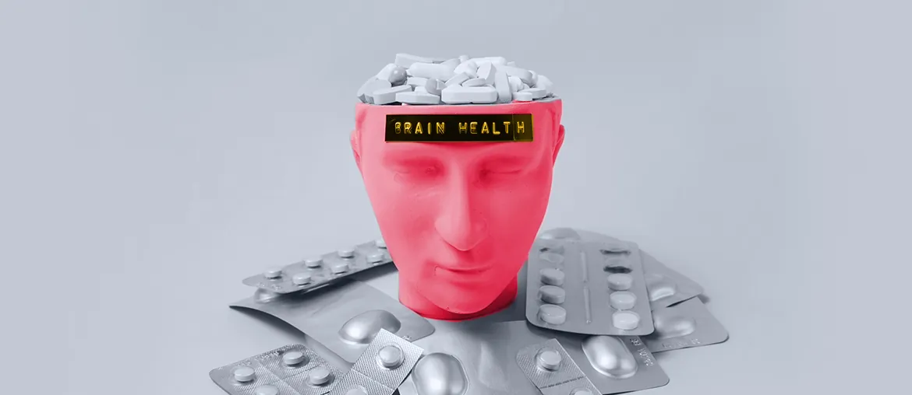

Platform for Mental Health Counselling in Canada
Elinext rebuilt a mental health counselling platform and reduced manual admin work for counselors and billing teams.
Read case studyPrepared for CarePoint Response
Saw the 988 Text and Chat Counselor hiring signal. This brief focuses on the public support path that new counselor capacity depends on during each shift.
CarePoint is scaling 988 text and chat support, not building a software team. That usually means call, text, chat, referral, and mobile response handoffs must stay simple while demand grows. Your site already names 988, Mobile Response Teams, detox, case management, and youth coordination. The risk is that people and partners meet those options in different places. If that stays messy, new counselor hours can be spent on routing instead of care.
The referral forms page has several useful paths, but the main buttons repeat "CLICK HERE." Rename each action around the service and audience.
Run one mobile pass on 988, referral forms, and mobile response pages. Put call, text/chat, refer, and emergency danger choices first.
A scoped four-week project fits this moment better than a long developer retainer.
Relevant stack: HTML/CSS, JavaScript, React when needed, QA, analytics, and secure healthcare delivery practices.
Elinext is a full-cycle software development company, active since 1997, with about 700 in-house specialists and no freelancers. For CarePoint, the useful fit is not bulk outstaffing. It is a small web, QA, UX, and analytics team that can improve a high-trust public access path. Elinext is certified to ISO 9001 and ISO 27001. Named customers include Siemens, Broadcom, Volkswagen, TRUMPF, and TUI. That background fits a short, careful sprint around crisis access and referral handoffs.
Elinext rebuilt a mental health counselling platform and reduced manual admin work for counselors and billing teams.
Read case study
Elinext built web features for clinics supporting patients with schizophrenia, including patient entry and care workflows.
Read case study